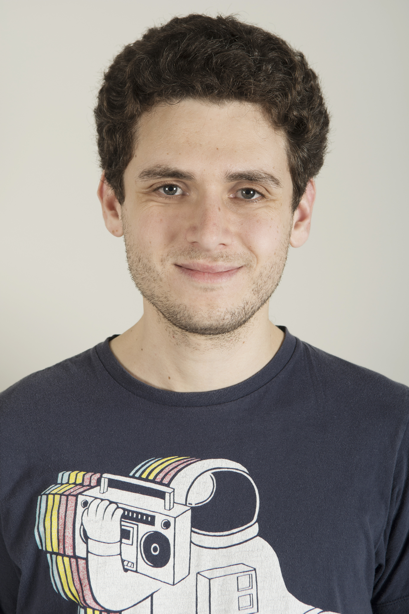

Victor May
Machine Learning Engineer & Researcher
About Me

Hello, Internet.
I’m a Staff Software Engineer at Google Cloud, based in New York City, currently focused on AI for software engineering. Previously, I led a team at Chegg fine-tuning vision-language models (VLMs) for multimodal question answering. Before that, I worked on recommender systems and multilingual NLP at Taboola.
I hold an M.Sc. in Applied Mathematics from Tel Aviv University and a B.Sc. in Computer Science and Mathematics from Bar-Ilan University.
I contribute to open-source AI projects. Most recently, I collaborated with Ontocord on Aurora-M, a multilingual large language model. I also participated in the OpenAssistant initiative by LAION.
Links
Google Scholar | LinkedIn | Resume | X (Twitter)
News
July 2025: Our new manuscript FreshBrew: A Benchmark for Evaluating AI Agents on Java Code Migration had been submitted for publication.
Publications
-
An algorithm for improving Non-Local Means operators via low-rank approximation
Victor May, Yosi Keller, Nir Sharon, Yoel Shkolnisky (2014)
Link -
GitChameleon: Evaluating AI Code Generation Against Python Library Version Incompatibilities
Diganta Misra, Nizar Islah, Victor May, Brice Rauby, Zihan Wang, Justine Gehring, Antonio Orvieto, Muawiz Chaudhary, Eilif B. Muller, Irina Rish, Samira Ebrahimi Kahou, Massimo Caccia (2025)
Link -
Aurora-M: Open Source Continual Pre-training for Multilingual Language and Code
Nakamura, Taishi, Mishra, Mayank, Tedeschi, Simone, Chai, Yekun, Stillerman, Jason T., Friedrich, Felix, Yadav, Prateek, Laud, Tanmay, Chien, Vu Minh, Zhuo, Terry Yue, Misra, Diganta, Bogin, Ben, Vu, Xuan-Son, Karpinska, Marzena, Dantuluri, Arnav Varma, Kusa, Wojciech, Furlanello, Tommaso, Yokota, Rio, Muennighoff, Niklas, Pai, Suhas, Adewumi, Tosin, Laippala, Veronika, Yao, Xiaozhe, Junior, Adalberto Barbosa, Drozd, Aleksandr, Clive, Jordan, Gupta, Kshitij, Chen, Liangyu, Sun, Qi, Tsui, Ken, Moustafa-Fahmy, Nour, Monti, Nicolo, Dang, Tai, Luo, Ziyang, Bui, Tien-Tung, Navigli, Roberto, Mehta, Virendra, Blumberg, Matthew, May, Victor, Nguyen, Hiep, Pyysalo, Sampo (2025)
Link
Blogging
I write about machine learning and related topics on
Medium.
Kaggle Competitions
- 🥈 Silver Medal (Top 1%) – Feedback Prize: English Language Learning
- 🥈 Silver Medal (Top 3%) – Google AI4Code
- 🥉 Bronze Medal (Top 6%) – U.S. Patent Phrase to Phrase Matching